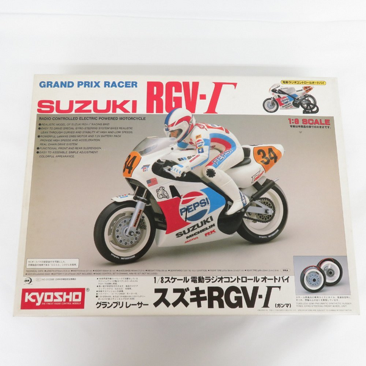

京商 グランプリレーサー

引用元画像：京商カタログ
📋 基本情報
| メーカー | 京商（Kyosho） |
|---|---|
| 機種名 | グランプリレーサー（Grand Prix Racer） |
| シャーシ略称 | グランプリレーサー |
| 型番 | 3004（Suzuki RGV-Γ） |
| 発売時期 | 1987年 |
| 価格 | 当時価格：詳細不明 |
| 生産状況 | 生産終了 |
| カテゴリー | ラジコンバイク（1/8スケール 電動RCバイク） |
| サブカテゴリー | EPオートバイ（電動バイク） |
| シリーズ | グランプリレーサーシリーズ（初代） |
| 受賞歴 | 第22回モデル大賞テクニック賞受賞 |
📏 シャーシスペック
| スケール | 1/8 |
|---|---|
| 車体ベース | Suzuki RGV-Γ（スズキ RGV ガンマ） |
| 駆動方式 | SDSS（Semi-Direct Steering System）方式 |
| ライダーフィギュア | 13関節可動式ライダーフィギュア標準装備 |
| スケール感 | ディスプレイモデル並のスケール感を実現 |
⚙️ 駆動系・ステアリング
| ステアリング方式 | SDSS（Semi-Direct Steering System） ※独創的な二輪走行性能を実現 |
|---|---|
| バンク機構 | フルバンクコーナリング対応 ※ライダーが車体と連動してバンク |
| ライダー連動 | 13関節可動式ライダーフィギュアがコーナリング時にハングオン |
| モーター | 電動モーター（EPタイプ、詳細不明） |
📡 プロポ・電装系
| プロポ | 2チャンネルプロポ（別売） |
|---|---|
| サーボ | ステアリング用サーボ（別売） |
| バッテリー | 走行用バッテリー（別売） |
💡 特徴
独創的なSDSS方式
- Semi-Direct Steering System（準直接操舵システム）を採用
- 実車のようなバンクコーナリングを再現
- ライダーフィギュアが13関節で可動し、コーナリング時にハングオン動作
- 誰でも簡単にコントロールできる操作性
- 二輪走行の難しさを克服した画期的なシステム
ディスプレイモデル並のスケール感
- 1/8スケールSuzuki RGV-Γを忠実に再現
- 実車のGPレーサーの雰囲気を完全再現
- 走行性能とスケール感を両立した稀有な存在
- 飾っても走らせても楽しめる設計
第22回モデル大賞テクニック賞受賞
- 1987年当時、SDSS方式の独創性が高く評価
- RC業界におけるバイクモデルの新たな可能性を示した
- 技術的革新と完成度の高さが認められた証
グランプリレーサーシリーズの始祖
- 1987年発売の初代グランプリレーサーが後のHanging On Racerシリーズの原点
- 後継機種は1992年以降「Hanging On Racer」として展開
- Honda NSR500、Suzuki RGV-Γ等のGPレーサーを次々とモデル化
- 現在も「Hanging On Racer」として販売が継続中（2024年現在も復刻・新作登場）
🏆 歴史的背景
RCバイク市場への挑戦
- 1987年当時、RCバイクは非常にニッチな分野
- 二輪走行の難しさから実用的な製品が少なかった
- 京商がSDSS方式で二輪走行の課題を解決
- 第22回モデル大賞テクニック賞受賞で業界から高評価
Hanging On Racerシリーズへの継承
- 1987年：グランプリレーサー（初代、SDSS方式確立）
- 1992年以降：Hanging On Racerシリーズとして展開
- 2016年～：復刻版Hanging On Racer登場（Honda NSR500 1991、Suzuki RGV-Γ 1992等）
- 2024年現在：新作も継続的にリリース
技術的遺産
- SDSS方式は現在のHanging On Racerにも継承
- 13関節可動ライダーフィギュアの設計思想が受け継がれている
- ディスプレイとしての美しさと走行性能の両立
- 誰でも楽しめる操作性はシリーズ共通のDNA
🔧 ぽすとそに工房での修理実績
修理難易度
★★★★★（非常に難しい）
パーツがほぼ見当たらなく、レストアとしても難しい状態です。情報も公式と有志の方が少し載せているのみでほぼないのが現状です。
よくある故障・注意点
- パーツ入手困難：1987年モデルのパーツはほぼ絶版
- SDSS機構の複雑さ：独自機構のため修理難易度が高い
- ライダーフィギュアの関節部分の劣化・破損
- バンク機構のバネ・ダンパーの経年劣化
- 電装系パーツの経年劣化
- 樹脂パーツの経年劣化による強度低下
修理のポイント
- 現行のHanging On Racerシリーズと共通パーツがある可能性を探る
- SDSS機構の理解には現行モデルのマニュアルも参考になる
- ライダーフィギュアの関節部分は慎重に扱う
- バンク機構のバネは汎用品で代用可能な場合あり
- 電装系は現行品へのアップグレードも視野に
- 3Dプリンタでの部品自作も検討
- 海外RCコミュニティでの情報収集が不可欠
その他の特徴
- 歴史的価値が非常に高い（第22回モデル大賞テクニック賞受賞機）
- Hanging On Racerシリーズの原点として保存価値が高い
- 完全レストアは極めて困難、「動態保存」を目指すのが現実的
- 現行Hanging On Racerとの比較研究も興味深い
- ディスプレイとしても価値が高い